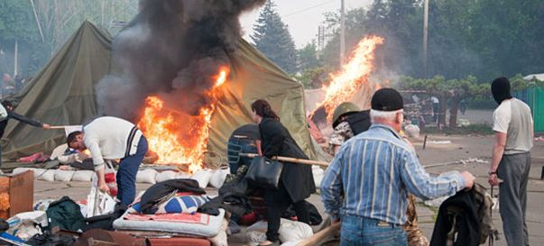
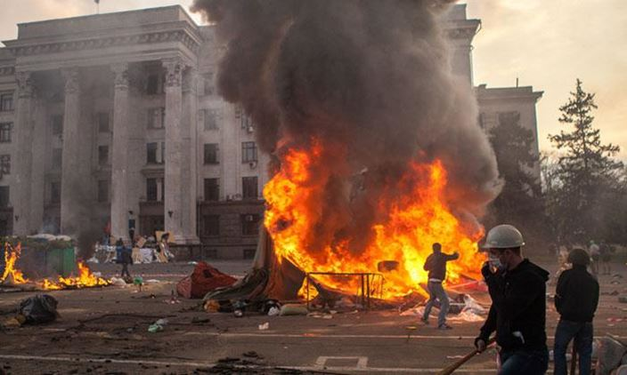
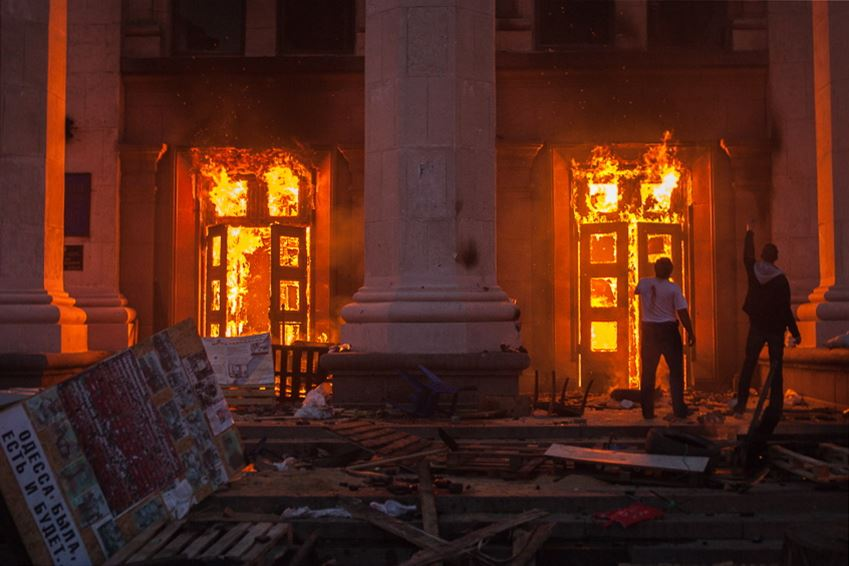
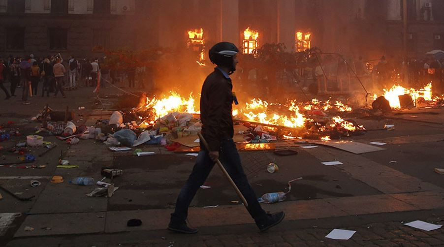
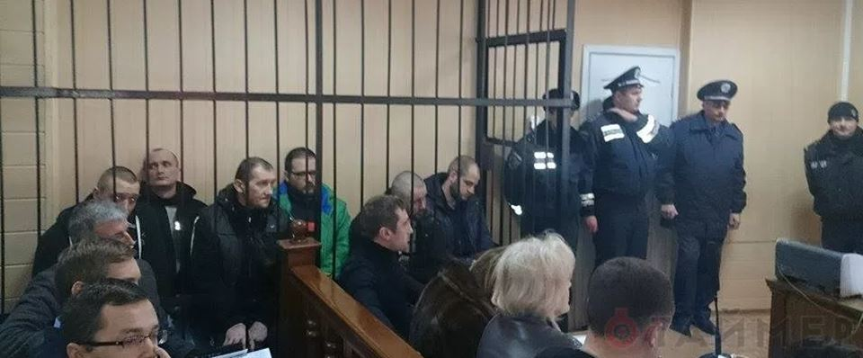
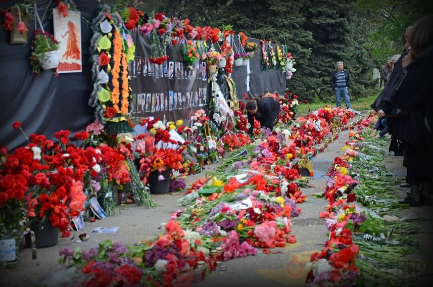

Le Congrès russe du Canada demande une enquête équitable et indépendante sur les événements tragiques du 2 mai 2014 à Odessa en Ukraine
par Igor BABALICH
Chers parlementaires,
Pour le troisième anniversaire des événements tragiques d'Odessa du 2 mai 2014, le Congrès russe du Canada (CRC) se remémore ceux qui ont été victimes de la violence des radicaux de droite ukrainiens et attire l'attention sur l'échec des autorités ukrainiennes à mener à bien une enquête impartiale et de poursuivre les coupables. Le CRC demande au gouvernement canadien de faire pression sur les autorités de Kiev afin que des investigations soient menées jusqu'au bout, que la vérité soit connue et justice rendue, sur l'une des pages les plus sombres de l'histoire ukrainienne récente.
Le 2 mai 2014, une tragédie s'est écrite dans le livre d'histoire d'Odessa. Des dizaines de personnes sont mortes suite à une flambée de violence contre des citoyens de la ville d'Odessa et de sa région immédiate, qui n'avaient pas soutenu le changement de régime « Euromaïdan » à Kiev dix semaines plus tôt. Les manifestants ont érigé un camp de tentes sur la Place Koulikovo dans le centre d'Odessa, en un lieu de rassemblement pacifique. Ils recueillaient des signatures pour une pétition demandant la tenue d'un référendum dans toute l'Ukraine, sur la décentralisation des pouvoirs du gouvernement centralisateur de l'Ukraine et la reconnaissance du russe comme deuxième langue officielle du pays. Ces demandes ont toujours été celles des habitants de l'Ukraine du Sud et de l'Est, qui historiquement, culturellement et linguistiquement sont très proches de la Russie. Cependant, les gouvernements successifs de l'Ukraine post-soviétique n'ont jamais été favorables à ces demandes.
La Place Koulikovo est devenue le point de ralliement des activistes anti-Maïdan. La population de la ville d'Odessa et de sa région était divisée sur la question d'Euromaïdan, avec des manifestations pro et anti-Euromaïdan, plusieurs rassemblements publics se sont déroulés de février à avril en 2014. Le 2 mai, des centaines de fans de football extrémistes, connus pour leur soutien au nationalisme ukrainien de droite, sont arrivés en autobus à Odessa pour assister à un match. Des membres de groupes d'« autodéfense » extrémistes et paramilitaires d'Euromaïdan provenant de diverses villes ukrainiennes sont également arrivés à Odessa ce jour-là. Ils se sont joints aux extrémistes de droite du club de football local pour organiser une marche pour l'unité de l'Ukraine à travers le centre de la ville. Les militants anti-Maïdan ont organisé leurs propres groupes dans le centre d'Odessa. Les deux parties se sont affrontées et la police n’a presque rien fait pour prévenir la violence qui a éclaté. Six personnes ont perdu la vie dans ces affrontements, et beaucoup d'autres ont été blessées.
À 18h30, les ultras-nationalistes sont arrivés sur la Place Koulikovo. Ils ont attaqué et incendié le camp anti-Maïdan, en utilisant des cocktails Molotov, des pavés et des armes à feu. Ils ont battu les militants du camp Koulikovo avec des battes de baseball et des chaînes. Les militants anti-Maïdan se sont alors réfugiés dans la Maison des syndicats. Les radicaux de droite ont encerclé l'édifice et l'ont incendié, piégeant ainsi les militants à l'intérieur. Certains d'entre eux ont essayé d'échapper au feu en fuyant sur le toit de l'édifice, de là, certains ont pu être finalement sauvés, d'autres ont sauté des fenêtres du deuxième et du troisième étage. Certains ont été battus à mort par des bandes d'extrémistes, à l'intérieur, beaucoup ont été brûlés vif ou sont morts étouffés.
Selon les statistiques officielles, 42 personnes sont mortes dans l'incendie de la Maison des syndicats le 2 mai, cependant, le nombre de victimes a probablement dépassé 100 personnes, selon des proches et des témoins. Beaucoup de survivants ont été gravement blessés, certains d'entre eux ont été emmenés à l'hôpital, mais ils ne sont pas restés là. Leurs parents les ont sortis, craignant qu'ils ne soient tués par des extrémistes.
D'autres ne sont même pas allés à l'hôpital par peur d'être signalés aux autorités et arrêtés, certains des survivants sont morts de leurs blessures.
Le massacre s'est déroulé sous les yeux de la police qui observaient mais n'intervenaient pas parce que, selon les responsables de la police, ils n'avaient reçu «aucun ordre» d'agir. Les supérieurs de la police assistaient à une réunion imprévue appelée par les autorités supérieures qui a duré plusieurs heures. La caserne des pompiers, située à moins de 500 m de la Maison des syndicats, a reçu de nombreux appels, mais il a fallu 45 minutes avant que les pompiers arrivent sur place.
Les autorités ukrainiennes ont mené cinq enquêtes distinctes sur le massacre d'Odessa : par le Procureur général, par le ministère de l'Intérieur, par une commission parlementaire spéciale, par l'Ombudsman ukrainien et par le service de police d'Odessa. Aucune de ces enquêtes n'a abouti à des résultats concluants. La quasi-totalité de ceux qui ont été arrêtés dans le cadre des événements du 2 mai et qui font actuellement face à des accusations criminelles appartiennent au camp fédéraliste anti-Maïdan. Ils sont tous accusés identiquement d'« avoir causé des émeutes» au lieu d'être accusés individuellement d'infractions spécifiques. Aucun des nationalistes de droite, responsables des meurtres à la Maison syndicale n'a été inculpé. Jusqu'au 24 mars 2017, le Comité d'association parlementaire UE-Ukraine exigeait toujours «des résultats dans les enquêtes sur les crimes commis lors des manifestations d'Euromaïdan et sur les violences à Odessa du 2 mai 2014 afin de traduire en justice les responsables sans délai ». (1)

Décidemment cette affaire de l’Ukraine est digne du Reichstag et des procès nazis… Ce sont non pas les nazis qui ont brulés les militants antifascistes qui sont jugés sans avocat, Pravy sektor qui ose manifester et c’est dans la logique de notre presse pourrie que de taire cette réalité et de contribuer au procès de leurs poulains les salopards qui règnent à Kiev. (note de Danielle Bleitrach)
Trois ans après ces événements tragiques, il est clair que les autorités ukrainiennes entravent de manière intentionnelle l'avancement des enquêtes. La poursuite n'a pas été en mesure de produire des preuves convaincantes contre les accusés fédéralistes anti-Maïdan, partisans de relations harmonieuses entre l'Ukraine avec la Russie. De nombreuses violations de règles légales et procédurales ont été observées au cours des audiences. À plusieurs reprises, des extrémistes de droite ont fait irruption dans les salles d'audience pendant les procédures, ont menacé les juges, les avocats de la défense et les familles des défendeurs et les ont agressés physiquement. Dans plusieurs cas, les juges se sont retirés de l'enquête par peur de représailles des nationalistes. Des preuves documentaires ont été falsifiées. L'enquête a été sabotée au plus haut niveau du ministère de l'Intérieur de l'Ukraine (2).
Les autorités ukrainiennes n'ont manifestement pas la volonté d'aboutir à des résultats pour une raison simple: les mêmes personnes et institutions qui sont responsables de la tragédie d'Odessa sont chargées de l'enquête. Le Comité consultatif international du Conseil de l'Europe a conclu en novembre 2015 que le gouvernement ukrainien a échoué à mener correctement ses enquêtes et à poursuivre les responsables des affrontements violents du 2 mai 2014 à Odessa.
Les experts européens ont constaté que les enquêtes de l'Ukraine sur les « désordres publiques » dans le centre-ville, sur l'incendie dans la Maison des syndicats et sur la conduite du personnel du Service d'urgence de l'État en réponse à l'incendie manquaient d'indépendance institutionnelle et pratique (3).
L'échec du gouvernement ukrainien à identifier et à poursuivre les auteurs du massacre d'Odessa a posé de sérieux doutes sur la démocratie et sur la primauté du droit dans l'Ukraine post-Euromaidan. Les dirigeants ukrainiens actuels et leurs zélés partisans en Occident, y compris la ministre des Affaires étrangères du Canada, Chrystia Freeland et le Congrès ukrainien du Canada, affirment que l'Ukraine est en train de réformer avec succès ses agences d'application de la loi et le Bureau du Procureur général.
Selon la déclaration faite par le Congrès ukrainien canadien au Comité permanent des affaires étrangères et du développement international du Parlement du Canada le 23 mars 2017 : «... il existe de nombreux exemples positifs de ce qui a changé sur le terrain (en Ukraine). Nous sommes en voie, avec le système judiciaire, avec la réforme de la police, de changer radicalement la vie des citoyens ukrainiens et de donner l'exemple aux personnes en Biélorussie et en Russie de ce que peut être un meilleur avenir ... ».
Comment ces réformes peuvent-elles être couronnées de succès si aucune de ces agences n'a démontré la volonté ou la capacité de traduire en justice les meurtriers même trois ans après le massacre d'Odessa ? La société ukrainienne doit connaître la vérité, ce qui leur est refusé par les autorités ukrainiennes. Les radicaux nationalistes coupables de tuer des civils innocents de sang froid devraient être tenus responsables de leurs actes.
Il est cependant peu probable que, dans l'Ukraine d'aujourd'hui, la justice soit rendue sans aucune aide extérieure. Comme dans le cas des meurtres de tireurs d'élite non identifiés de Maïdan en février 2014, les hauts fonctionnaires de Kiev se sont révélés désintéressés à mener des enquêtes honnêtes et efficaces sur le massacre d'Odessa, car cela pourrait révéler l'implication dans ces meurtres de ceux qui détiennent actuellement le pouvoir. Le gouvernement de l'Ukraine a nié et a caché l'implication des nationalistes d'extrême droite et de leurs paramilitaires dans l'escalade de la violence d'Euromaïdan et sur la persécution des Ukrainiens pro-russes à travers le pays. Pendant ce temps, des centaines de personnes qui se sont opposées à l'Euromaidan ont été arrêtées et détenues illégalement. Des voyous d'extrême droite intimident régulièrement et attaquent ceux qui osent publiquement faire entendre leurs désaccords avec l'ultra-nationalisme ukrainien. Le gouvernement ne fait rien pour protéger les droits de ceux qui sont agressés.
L'échec des autorités ukrainiennes à enquêter sur la tragédie du 2 mai 2014 à Odessa appelle à une action immédiate du gouvernement du Canada. Si tous les membres du cabinet de M. Trudeau sont sensibles au sort du peuple ukrainien et lui veulent la paix inter-ethnique, il ne devrait y avoir aucune difficulté de la part de notre gouvernement de faire pression sur M. Porochenko et sur le gouvernement ukrainien dans son ensemble pour trouver les responsables de la mort de citoyens ukrainiens ordinaires à Kiev et à Odessa et de les poursuivre devant les tribunaux.
Nous demandons au gouvernement du Canada à tenir le gouvernement ukrainien responsable de la conclusion de l'enquête sur la tragédie d'Odessa. Seule la vérité et la justice pourront apporter la réconciliation et le pardon.
Au nom du Congrès russe du Canada,
Igor Babalich
Président du Congrès russe du Canada
Documents cités :
1. Déclaration finale et recommandations du comité d'association parlementaire UE-Ukraine du 24 mars 2017 : http://bit.ly/2qzCrQ2
2. Un appel pour une enquête internationale sur les événements violents à Maïdan et à Odessa par l'Agence des droits humains du Conseil économique et social des Nations-Unies (ECOSOC) du 21 mars 2016 : http://bit.ly/2qt5SIb
3.Communiqué de presse du Comité Consultatif International sur l'Ukraine sur l'enquête des évènements d'Odessa de mai 2014, le 4 novembre 2015 : http://bit.ly/2qt8k1h
4. Rapport du Comité Consultatif International sur la tragédie à Odessa du 2 mai 2014 et sur son enquête : http://bit.ly/2qvk6nN
Partager cette page